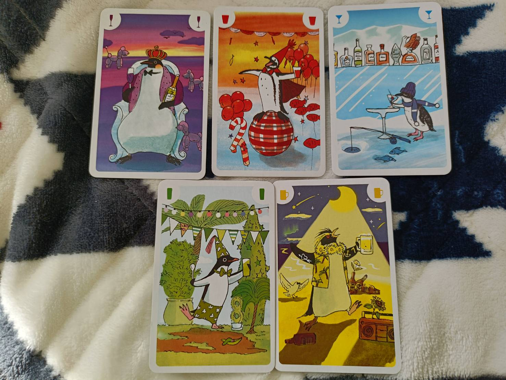
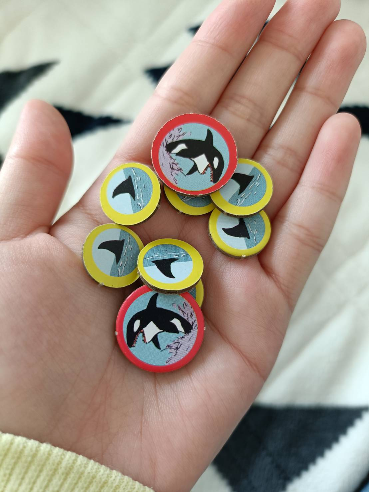
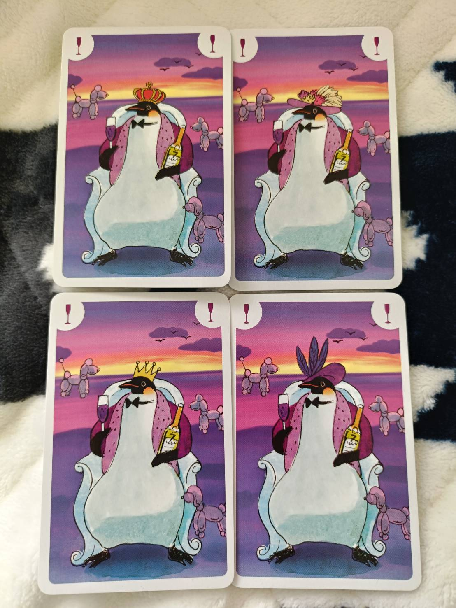
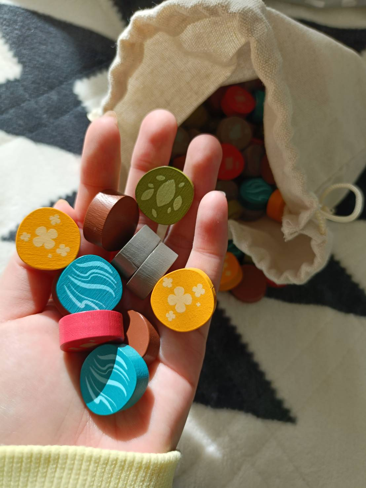
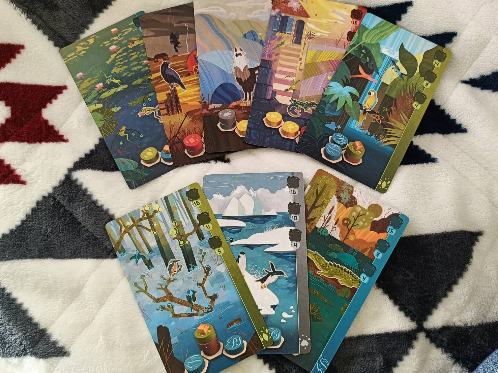
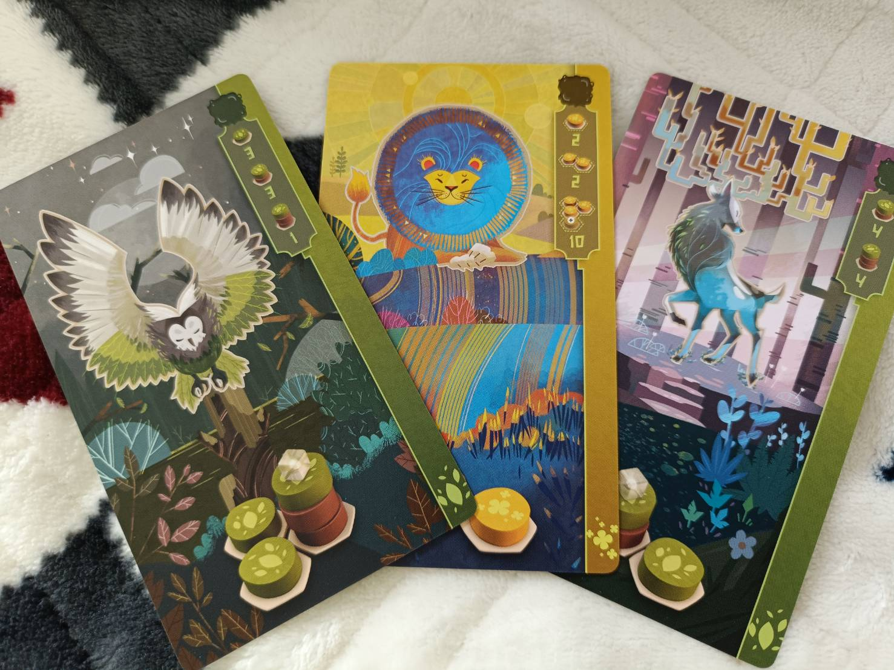

大好きなボードゲーム紹介
はじめまして！ボードゲーム大好き冬山です。
今回は、私が持っているボードゲームの中でも
推しを紹介していきます❤️
本当は全部紹介したいのですが、時間と労力の関係もあり、3つに厳選して紹介したいと思います。
その１：ペンギンパーティー
 まずはライトなものから！
まずはライトなものから！
ペンギンのパーティーを開きましょう！！5色のペンギンでピラミッドを作ります。自分の手番に１匹、ルールに従ってペンギンを配置します。

ペンギンがどこにも置けなくなったらその時点で脱落！！手札に残ったペンギンはシャチに食べられてしまいます...

人数分ラウンドを行い、シャチが少ない人が勝ち！！
勝つコツは、自分が持っていない色をつぶし、みんなの手札を出させないこと。こんなにかわいい見た目でも、中身はバチバチの潰し合いだったりします。自然って過酷...
推しポイント
見てー！同じ色のペンギンでも、イラストに微妙に個性があるんです...！！

自分の手番が回ってくるまで、ペンギンたちを眺めているのもひとつの楽しみです。
難易度：☆
癒され度：☆☆☆☆
潰し合い度：☆☆☆☆☆
「ペンギンパーティー」の通販はこちら！（外部リンクに飛びます）
その２：ハーモニーズ
 またまた動物がモチーフのゲームです。
またまた動物がモチーフのゲームです。
5種類の地形コマを使って、動物ができるだけたくさん棲める景観を目指すゲームです！


棲んでいる動物の種類と数によって得点が入ります。
また、それだけではなく、最終的な景観も得点になります！
それだけ狭い範囲で効率よく、高得点を狙える地形を作れるかが鍵！なかなか頭を使うゲームです。
精霊ちゃんの力を借りるモードもあります。

ほんとにかわいすぎる。
推しポイント
邪魔のし合いがあまり勃発しないので、自分のペースでじっくり戦略を立ててゲームを進められるところ！どの動物を共生させるのが効率が良いか、毎回違う戦略を立てる必要があるのでリピ性もgood👌
難易度：☆☆☆☆
癒され度：☆☆☆☆
じっくり度：☆☆☆☆☆
「ハーモニーズ」の通販はこちら！（外部リンクに飛びます）
その３：フレイムクラフト
 最後はドラゴンがテーマのこのゲーム！！ボードゲーム探しでネットサーフィンしていたときに見つけ、一目惚れして買っちゃいました。
最後はドラゴンがテーマのこのゲーム！！ボードゲーム探しでネットサーフィンしていたときに見つけ、一目惚れして買っちゃいました。

 もう、とにかく何もかもがかわいすぎる...！
もう、とにかく何もかもがかわいすぎる...！
 360度かわいい...
360度かわいい...
「フレイムキーパー」というドラゴンを操る神様的な者になり、いちばん評判を集めた人が価値のゲームです。
おおまかな流れは、お店を訪れて、資源をゲット→お店にドラゴンを配置する→ドラゴンの力を使う という感じです。

 なんと、ドラゴンの絵柄ぜ〜んぶ違くて、１匹ずつちゃんと名前があるんです。
なんと、ドラゴンの絵柄ぜ〜んぶ違くて、１匹ずつちゃんと名前があるんです。
 こっちは伝説ドラゴン。
こっちは伝説ドラゴン。

ときには魔法をお店にかけて、もらえる資源をブーストさせることもできます。

推しポイント
なんといってもこの心温まる世界観...！ドラゴンと人間って敵対するのが常ですが、このゲームは人間とドラゴンが助け合って生きる世界なんです。あぁ〜、ここに住みたすぎるよ😭
難易度：☆☆☆
癒され度：☆☆☆☆☆☆☆☆
ハートフル：☆☆☆☆☆☆☆☆
「フレイムクラフト」の通販はこちら！（外部リンクに飛びます）